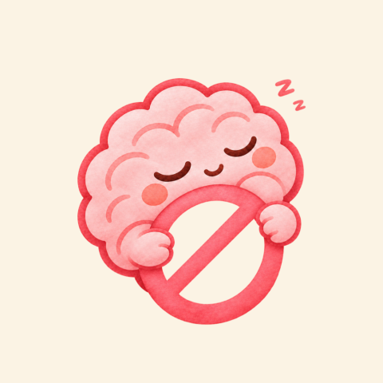

ドパキン — ドーパミン、いったん禁止。
決めた時間は、もう開けない。
SNSやショート動画のアプリを、自分で決めた時間だけロック。ロック中はアプリ内から解除できないので、「ちょっとだけ」が始まりにくくなります。時間になれば、自動で元に戻ります。
近日公開
iPhone 専用（iOS 18.0 以降）
緊急のときは、iOS の「設定」でドパキンのスクリーンタイムをオフにすると、ロックはすぐに外れます。ドパキンは、自分の iPhone を自分で管理するためのアプリです。
やることは少なく、ロックはしっかり
-
ロックするアプリを選ぶ
アプリ単位でも、カテゴリごとでも、Web サイトでも選べます（アプリと Web サイトは、それぞれ50件まで）。カテゴリで選ぶと、その中のアプリはすべてロックされます。
-
タイマーの感覚で時間を決める
ホイールを回して長さを決めるだけ。5分から最長24時間まで、5分きざみで選べます。「何時まで」と終わりの時刻で決めることもできます（2時間をこえる長さはドパキン Pro）。
-
始めたら、アプリ内からは解除できない
ロック中にできるのは延長だけで、短くする・やめる操作はアプリ内にありません。時間になると自動でロックが外れます。緊急のときは、iOS の「設定」でドパキンのスクリーンタイムをオフにすれば、すぐに外れます。
-
記録は見るだけ、共有は画像で
どれだけロックしたかを、今日・この7日間・累計で見られます。連続日数や目標、ランキングはありません。ロックの宣言・完了・この7日間の記録は、画像にして共有できます。
使い方は3ステップ
-
時間を決める
長さをホイールで決めるか、終わりの時刻を指定します。
-
アプリを選ぶ
ロックしたいアプリやカテゴリを選びます。選んだ内容は次からもそのまま使えて、「ロック」タブの一覧で外したり並び替えたりできます。
-
開始する
確認の画面で「開始する」を押すと、ロックが始まります。時間になると、ロックが外れます。

はじめに「スクリーンタイムへのアクセス」の許可が必要です。パスコードが未設定の iPhone や、スクリーンタイムが保護者に管理されている iPhone などでは使えません。
料金
無料
2時間までのロックを、何回でも（延長を含めた合計）。ロックするアプリの数、時間になったときの自動解除、記録（今日・この7日間・累計）、画像での共有、テーマの切り替えは、Proと同じように使えます。

ドパキン Pro（買い切り）
最長24時間
2時間をこえる長さでロックできます。記録の月ごとのまとめと、共有画像の追加デザインも使えます。一度の購入でずっと使えて、サブスクリプション（自動更新）はありません。
日本の App Store では ¥680。価格は国や地域によって異なり、購入画面に表示される金額が正しい価格です。
ロックの解除にお金はかかりません。時間になれば、無料でも Proでも同じように元に戻ります。
よくある質問
ロックの途中でやめられますか
ドパキンの中からは解除できません。緊急のときは、iOS の「設定」でドパキンのスクリーンタイムをオフにすると、ロックはすぐに外れます。
連絡に使うアプリまで開けなくなりませんか
ロックされるのは、自分で選んだアプリ・カテゴリ・Web サイトだけです。カテゴリで選ぶと中のアプリはすべてロックされるので、連絡に使うアプリを残したいときは、アプリを1つずつ選んでください。
時間を過ぎても開かないときは
まず、ロックされたアプリで、下のボタンを押してください。開かなければ、ドパキンを開いてください。くわしい手順はサポートにあります。
無料でどこまで使えますか
2時間までのロックを、回数の制限なく使えます。2時間をこえる長さ（最長24時間）と、記録の月ごとのまとめ、共有画像の追加デザインは、買い切りのドパキン Proで使えます。
どのアプリを選んだか、外に送られますか
送られません。選んだアプリの情報とロックの記録は、端末の中にだけ保存されます。改善のために、ロックを開始したことや設定した長さなどの匿名の利用状況は計測しています。くわしくはプライバシーポリシーをご覧ください。
子どもの iPhone を管理できますか
できません。ドパキンは、自分の iPhone を自分で管理するためのアプリです。スクリーンタイムが保護者に管理されている iPhone では使えません。
何をロックしたかは、あなたの iPhone だけが知っている
ロックするアプリの選択とロックの記録は、端末の中にだけ保存されます。アカウントの登録は要らず、当方のサーバーに集めることもありません。改善のために匿名の利用状況（ロックを開始・完了したこと、設定した長さなど）は計測しますが、どのアプリを選んだかは送りません。くわしくはプライバシーポリシーに書いています。
まずは5分、ロックしてみる。
近日公開予定です。App Store で配信が始まりしだい、ここにダウンロードのリンクを置きます。
困ったときの手順とご質問への回答はサポートにあります。ご連絡は tempuraapps.support@gmail.com へどうぞ。
商標について
Apple、iPhone、App Store は、米国その他の国で登録された Apple Inc. の商標です。ドパキンは Apple Inc. が提供・後援するものではありません。